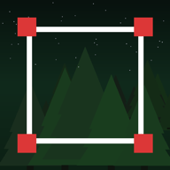
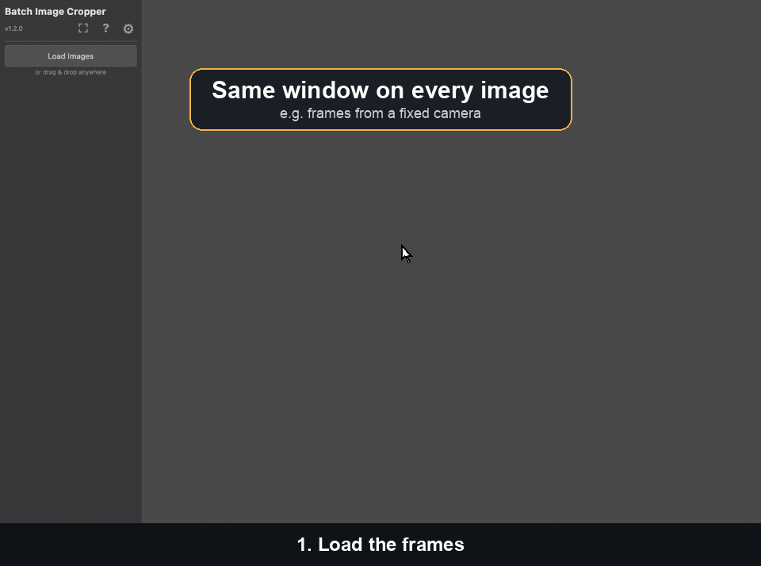
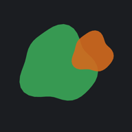
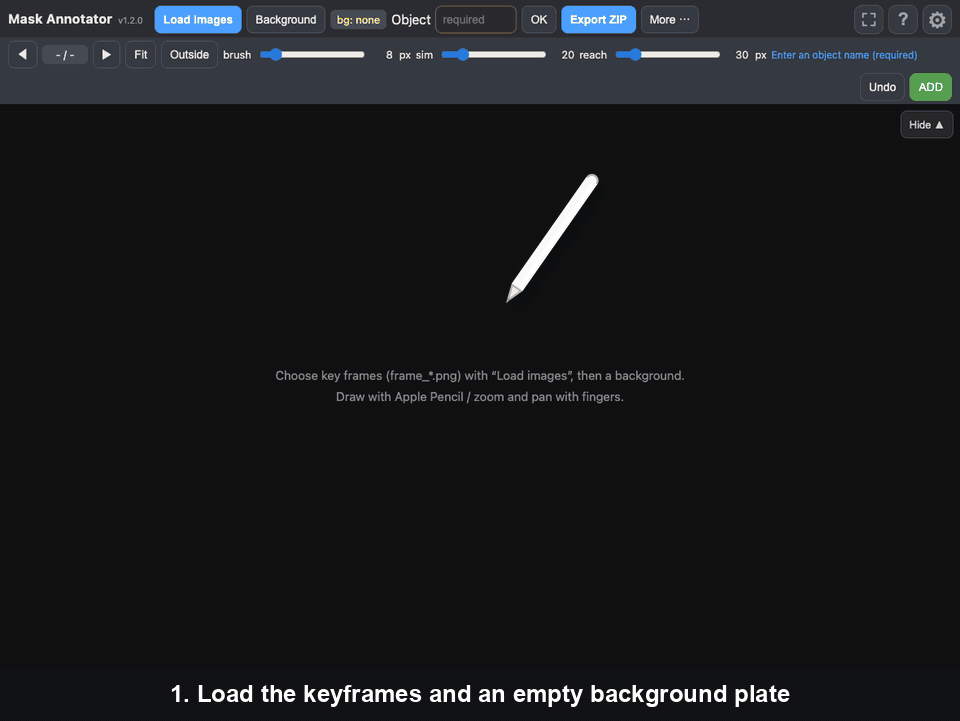
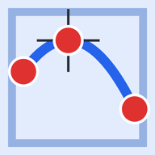
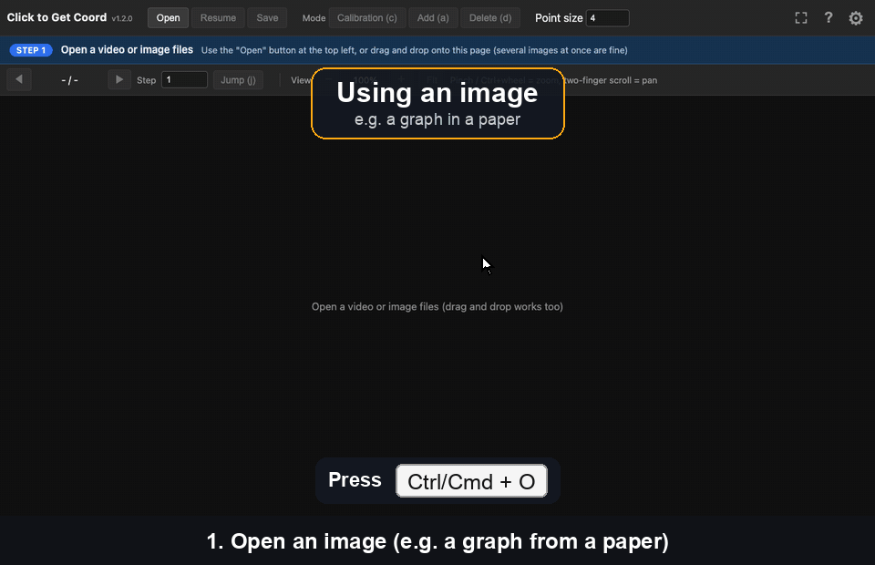
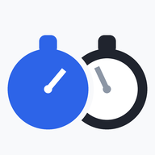
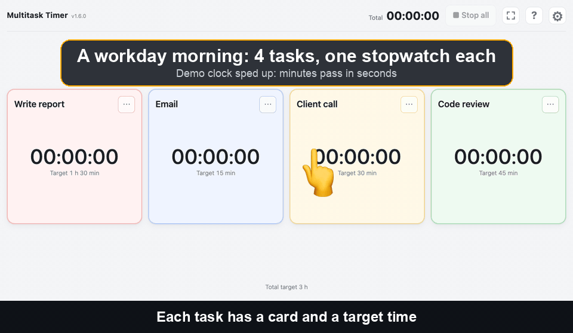
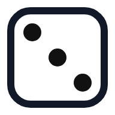
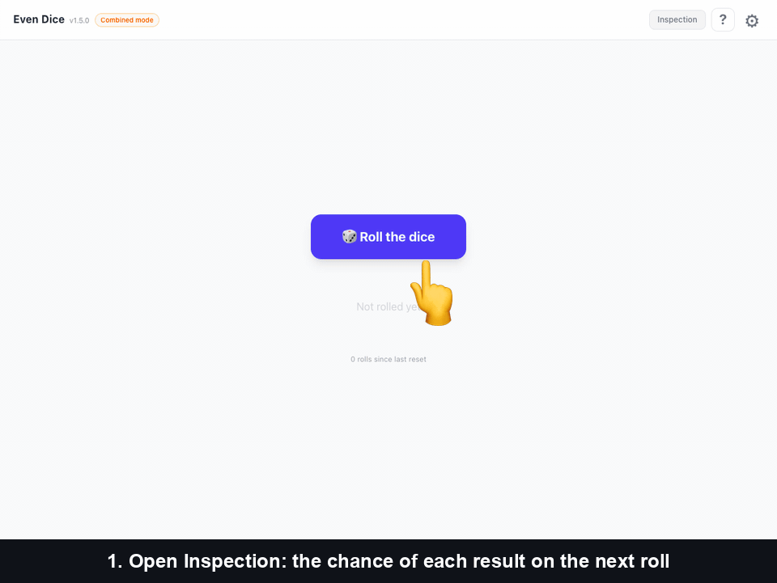

Batch Image Cropper
Crop many images in one go: cut every image at the same size and position, or align just the position, size or aspect ratio and frame each one yourself. Images are never uploaded.
▶ Watch demo

Small browser-based tools. No install, no server — everything runs client-side.

Crop many images in one go: cut every image at the same size and position, or align just the position, size or aspect ratio and frame each one yourself. Images are never uploaded.


Trace over an object with Apple Pencil and the mask follows its shape. Reuse the previous frame's mask by just moving and rotating it, clear everything outside a circled area at once, and rely on autosave, resume-from-ZIP and ZIP export.

Pick one or more local videos and play them back-to-back in a loop. Swipe on the screen to step frame by frame, forwards or back, and change the speed. Also handy for leaving a video running on a screen at a poster session.

Click points on a video or image and read them back as real-world coordinates, calibrated from two reference points. Export as CSV, images, and .mat files that Python and MATLAB can read.


Per-task stopwatches for parallel work: tap a card to start it and whatever was running stops, so the time always lands on exactly one task. Set a target per task and it warns you when you pass it.


A dice-rolling app using Softmax Decay to keep results statistically even over time — recently rolled faces become less likely.
